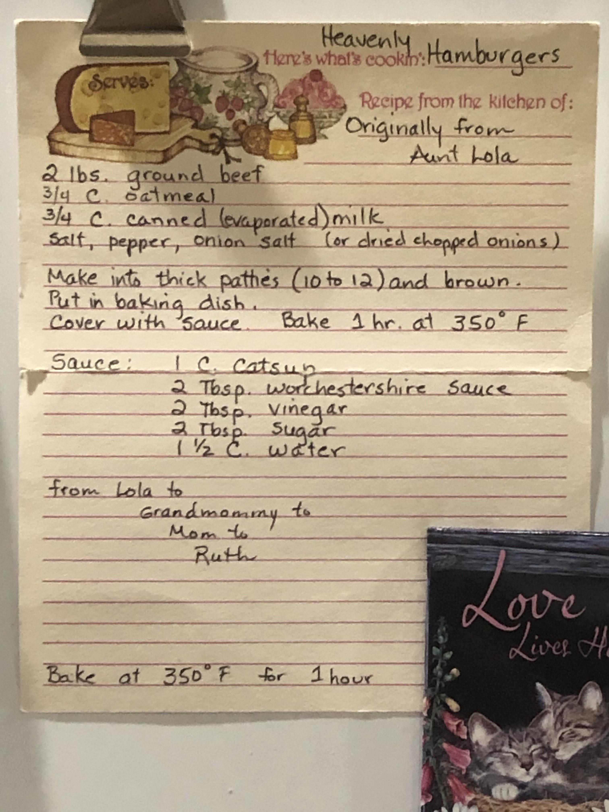
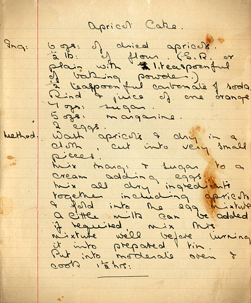
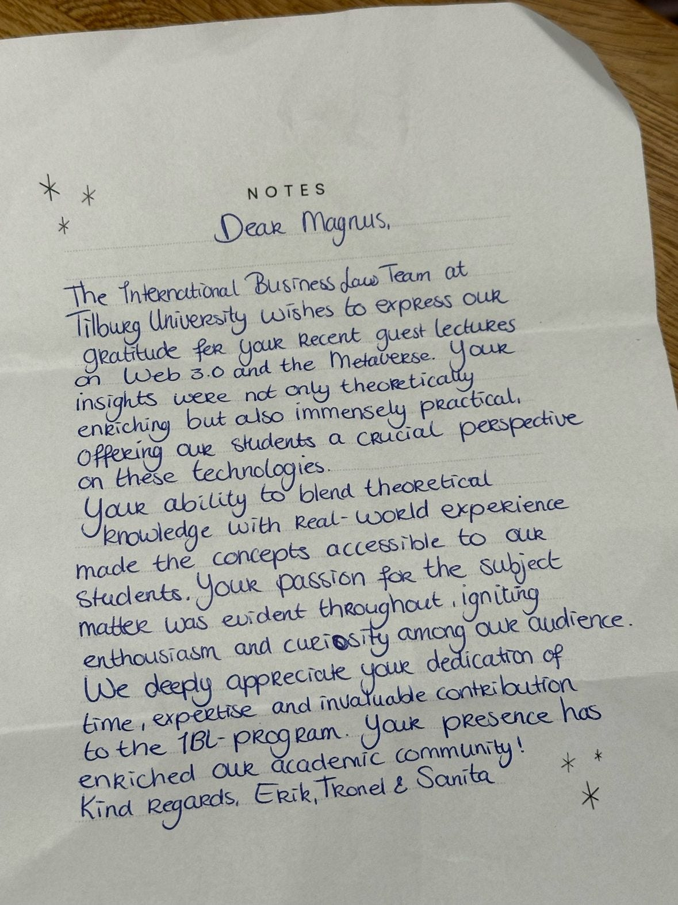

SDK Feedback · Internal
A head-to-head comparison of the Nutrient SDK's ICR engine against a
general-purpose VLM (Anthropic Claude) on three representative handwriting samples:
a structured print recipe card, a cursive recipe on aged paper, and a modern cursive letter.
/api/extraction/icr endpoint — Vision.extract_content() with VisionEngine.ICR, VisionFeatures.ALL minus the FORM bit. The fullText field of the response is reproduced verbatim below.This is the case ICR is supposed to be good at: clean, block-style print handwriting on a well-structured recipe card with clear field boundaries.

heavenly-hamburgers-recipe.jpegHeavenly Hamburgers
Recipe from the kitchen of: Originally from Aunt Lola
Make into thick patties (10 to 12) and brown. Put in baking dish. Cover with sauce. Bake 1 hr. at 350° F
Sauce: 1 C. Catsup · 2 Tbsp. Worchestershire sauce · 2 Tbsp. Vinegar · 2 Tbsp. Sugar · 1 ½ C. water
from Lola to Grandmommy to Mom to Ruth
Bake at 350° F for 1 hour
fullText verbatim
Fragmentary · 0.59 conf

apricot-cake-recipe.jpgApricot Cake.
Ing: 6 ozs. of dried apricots. ½ lb. of flour (S.R. or plain with ½ teaspoonful of baking powder). ½ teaspoonful carbonate of soda. Rind & juice of one orange. 6 ozs. sugar. 5 ozs. margarine. 2 eggs.
Method. Wash apricots & dry in a cloth. Cut into very small pieces. Mix marg. & sugar to a cream adding eggs. Mix all dry ingredients together including apricots & fold into the egg mixture. A little milk can be added if required. Mix mixture well before turning it into prepared tin. Put into moderate oven & cook 1½ hrs.
fullText verbatim
Unrecoverable · 0.64 conf

dear-magnus-thank-you-note.jpgNOTES
Dear Magnus,
The International Business Law Team at Tilburg University wishes to express our gratitude for your recent guest lectures on Web 3.0 and the Metaverse. Your insights were not only theoretically enriching but also immensely practical, offering our students a crucial perspective on these technologies.
Your ability to blend theoretical knowledge with Real-World experience made the concepts accessible to our students. Your passion for the subject matter was evident throughout, igniting enthusiasm and curiosity among our audience. We deeply appreciate your dedication of time, expertise and invaluable contribution to the IBL-program. Your presence has enriched our academic community!
Kind Regards, Erik, Tronel & Sanita
fullText verbatim
Anchors only · 0.71 conf
| Dimension | Claude | Nutrient ICR |
|---|---|---|
| Print recipe (Heavenly Hamburgers) recoverability | Reader can cook from the transcript | Section labels survive; ingredients, quantities, sauce list unrecoverable |
| Cursive recipe (apricot) recoverability | Reader can bake from the transcript | Recipe cannot be reconstructed |
| Cursive letter (Dear Magnus) recoverability | Letter can be quoted or summarized | Salutation and signature recoverable; body is noise |
| Proper nouns | "Tilburg University", "IBL-program", "Aunt Lola", "Worchestershire" preserved | Mostly missed; "lela" for Lola, "Worchestershire" mangled |
| Numeric quantities and units | "2 lbs.", "3/4 C.", "1 hr.", "350° F", "½ lb.", "1½ hrs" preserved | Mangled or absent across all three samples |
| Decorative card elements | Recognized as decoration; ignored | Confused for text; produces phantom output ("x 1 ~", "Reeipe from the kituhgn of:") |
| Reported confidence vs. truth | n/a (no confidence score) | 0.59 / 0.64 / 0.71 — uncorrelated with actual quality |
| Latency (single image, local hardware) | n/a (in-model) | 7.4s / 5.5s / 1.4s for ICR |
Before concluding, we exercised the obvious knobs the SDK exposes for ICR. None closed the gap.
SegmenterSettings.confidence_threshold × WordsDetectionSettings.confidence_threshold swept across nine combinations (0.5 / 0.7 / 0.85 each) on the Heavenly Hamburgers sample. Every combination produced byte-identical output — 29 elements, 0.59 avg confidence, same 324-char text including the phantom "x 1 ~" prefix. The documented confidence knobs do not gate ICR's final output.HandwritingSettings.word_refining_method was switched from HEURISTIC (default) to VLM with Claude configured. The VLM path did run (latency dropped from 15.5s to 7.2s) but the text output was byte-identical to heuristic mode. Word-refining is downstream of segmentation and can't fix upstream misreads.There is no combination of documented settings that closes the gap to Claude on the test samples. The recognition model itself is not configurable; only the surrounding pipeline.
Vision.transcribe()-style call that uses a configured VLM provider. The Anthropic / OpenAI / Gemini APIs are already exposed by the SDK for describe(); reusing that plumbing with a transcription prompt would give customers a high-quality path through the SDK rather than around it.docs/sdk-feedback/2026-05-28-icr-engine-quality.md in the same repository for that side of the picture.